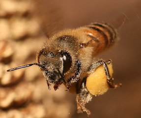

Фонд защиты медоносных пчел
Пчёлы играют важную роль в опылении цветущих растений, являясь самой многочисленной группой опылителей в экосистемах, связанных с цветами. В зависимости от текущей потребности, пчёлы могут сконцентрироваться как на сборе нектара, так и на сборе пыльцы. И в первом, и во втором случае пчёлы способствуют опылению растений, но в случае со сбором пыльцы этот процесс проходит гораздо более эффективно.
Пчёлы в качестве опылителей крайне важны в сельском хозяйстве. Пчёлы также играют очень важную, хотя и не до конца изученную, роль в питании птиц и других представителей дикой природы. Многие дикие пчёлы живут вдали от сельскохозяйственных угодий и иногда становятся жертвами специальных программ по уничтожению комаров, непарного шелкопряда (Lymantria dispar) и других насекомых-вредителей.
Популяция пчёл в Европе и Америке стремительно сокращается, начиная с зимы 2006 года. Явление CCD (Синдром разрушения колоний) неустановленной природы уничтожает миллионы пчелиных семей. Осложняет ситуацию то, что пестициды и другие химические вещества, используемые в сельском хозяйстве, ослабляют иммунитет пчёл и делают их ещё более уязвимыми к болезням. Кроме того, рост городов и сокращение количества дикорастущих растений-медоносов заставляет пчёл в поисках нектара летать очень далеко, что повышает риск распространения вируса.
Если сокращение популяции пчёл продолжится такими же темпами, к 2035 году эти насекомые исчезнут с лица земли. Исчезновение пчёл не только грозит утратой мёда, но и ставит под угрозу урожаи фруктов, овощей, ягод, орехов и некоторых злаков. Опыление многих растений и, следовательно, их урожайность полностью зависят от активности пчёл. Одна пчелиная семья может опылить за день около 3 миллионов цветов. По эффективности с пчёлами не могут сравниться другие насекомые: шмели, бабочки, жуки и мухи.